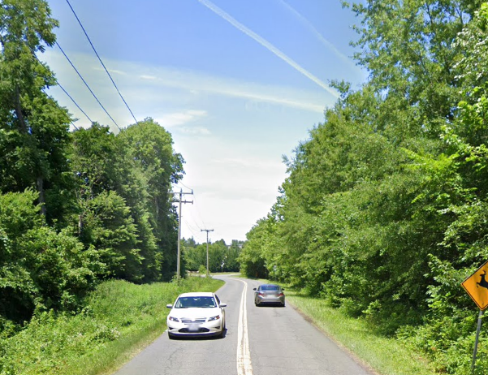

My first experience with the VRE was going to broad run to go to the Bristow Crumbl Cookie.

I then had to walk an extremely boring 1 and a half kilometers on what can only be described as car-centric hell, a testament to the band-aid nature of park and rides.
